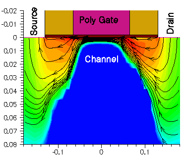
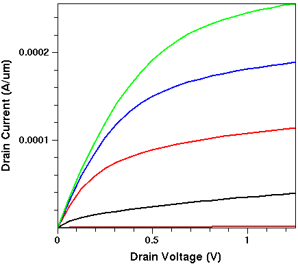
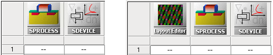
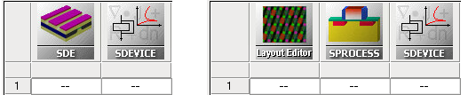
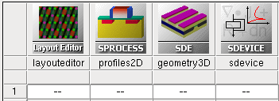
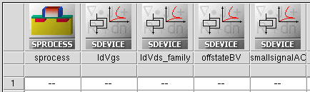
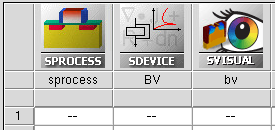

main menu
| module menu
| << previous section
| next section >>
main menu
| module menu
| << previous section
| next section >>
Tool Overview
1. What Is TCAD?
1.1 TCAD and the Semiconductor Industry
1.2 Process Simulation
1.3 Device Simulation
1.4 TCAD Simulation Flow
Objectives
- To briefly introduce TCAD and who uses it.
1.1 TCAD and the Semiconductor Industry
Technology Computer-Aided Design (TCAD) refers to using computer simulations to develop and optimize semiconductor processing technologies and devices. TCAD simulation tools solve fundamental, physical, partial differential equations, such as diffusion and transport equations for discretized geometries, representing the silicon wafer or the layer system in a semiconductor device. This intensive physical approach gives TCAD simulation predictive accuracy.
Therefore, it is possible to substitute TCAD computer simulations for costly and time-consuming test wafer runs when developing and characterizing a new semiconductor device or technology.
TCAD simulations are used widely in the semiconductor industry. As technologies become more complex, the semiconductor industry relies increasingly more on TCAD to cut costs and speed up the research and development process. In addition, semiconductor manufacturers use TCAD for yield analysis, that is, monitoring, analyzing, and optimizing their IC process flows, as well as analyzing the impact of IC process variation.
TCAD consists of two main branches: process simulation and device simulation.
1.2 Process Simulation
In process simulation, processing steps such as etching, deposition, ion implantation, thermal annealing, and oxidation are simulated based on physical equations, which govern the respective processing steps. The simulated part of the silicon wafer is discretized (meshed) and represented as a finite-element structure (see Figure 1).
For example, in the simulation of thermal annealing, complex diffusion equations for each dopant species are solved on this mesh. For oxidation simulations, the growth of silicon oxide is simulated taking into account the oxygen diffusion, the mechanical stresses at corners, and so on.
{kind=link}
Figure 1. Magnification of gate-drain corner of an NMOSFET with finite-element grid. (Click image for full-size view.)
1.3 Device Simulation
Device simulations can be thought of as virtual measurements of the electrical behavior of a semiconductor device, such as a transistor or diode. The device is represented as a meshed structure. Each node of the device has properties associated with it, such as material type and doping concentration. For each node, the carrier concentration, the current densities, the electric field, the generation and recombination rates, and so on are computed (see Figure 2).
Electrodes are represented as areas on which boundary conditions, such as applied voltages, are imposed. The device simulator solves the Poisson equation and the carrier continuity equation (and possibly other equations). After solving these equations, the resulting electrical currents at the contacts are extracted (see Figure 3).

Figure 2. Current flow lines in a 0.13 μm NMOSFET at Vgs = 1.5 V and Vds = 3.0 V; shading represents current density.

Figure 3. Drain current as a function of drain voltage for a 50 nm NMOSFET at Vgs = 0.25, 0.5, 0.75, 1.0, and 1.25 V.
1.4 TCAD Simulation Flow
A typical TCAD simulation flow is integrated in a Sentaurus Workbench project, and the flow usually consists of two main steps (see the Sentaurus Workbench module):
- Structure generation
- Device simulation
Two different approaches can be used for the structure generation:
- Process simulation performed by Sentaurus Process is based on physical models
for each step that is performed to fabricate a device (see the
Sentaurus Process module). It can refer to a given layout
file inside the tool input or can use the mask layout, generated by the Silicon WorkBench tool (see the Silicon WorkBench Interface module),
as shown in Figure 4.

Figure 4. TCAD simulation flow (left) started directly from Sentaurus Process or (right) using Silicon WorkBench (Layout Editor) to generate a layout.
- Process emulation or geometric definition of the device, performed by Sentaurus Structure
Editor (see the Sentaurus Structure Editor module).
It uses 2D or 3D predefined geometric objects in combination with analytically defined doping
profiles and profiles loaded from the process simulation step. It can refer to a given layout
file inside the tool input or can use the mask layout, generated by Silicon WorkBench as
shown in Figure 5.

Figure 5. TCAD simulation flow (left) started directly from Sentaurus Structure Editor or (right) using Silicon WorkBench to generate a layout.
Process simulation and process emulation require the specification of physical models for each step. Such physical models describe, for example, the diffusion of impurities or the physics of etching and deposition steps. Depending on the simulation task, you can choose models of differing accuracy and complexity. The simple geometric definition of the device can be used if no information about the process flow is available, or if the process flow is not important for the specific simulation task.
In some cases, the combination of Sentaurus Process and Sentaurus Structure Editor is required, for example, a 2D process flow simulation with Sentaurus Process, followed by 3D device geometry construction and 3D doping compilation, performed by Sentaurus Structure Editor to construct the 3D device structure (see Figure 6).

Figure 6. TCAD simulation flow using both Sentaurus Process and Sentaurus Structure Editor to construct 3D device structure.
Both process and device simulators use dedicated numeric methods, which require the spatial discretization of the device structure. The discretization is performed by the mesh generation routine, which is coupled with Sentaurus Process and also can be used as a standalone tool (see the Sentaurus Mesh module). After a process simulation, remeshing the device structure is required to fulfill the requirements on the device simulator side.
You can remesh either inside the corresponding structure generation tool or outside the structure generation step using a standalone Sentaurus Mesh tool (see Figure 7). Deciding which approach to use depends on your circumstances.
{kind=link}
Figure 7. TCAD simulation flow using (left) built-in mesh discretization in Sentaurus Process or (right) standalone mesh discretization performed by Sentaurus Mesh after Sentaurus Structure Editor tool step. (Click image for full-size view.)
After a structure is generated and meshed, you are ready to perform a device simulation with Sentaurus Device (see the Sentaurus Device module). There might be as many Sentaurus Device tools in the flow as needed to simulate different application tasks (see Figure 8).

Figure 8. TCAD simulation flow using one Sentaurus Process tool and multiple Sentaurus Device tools.
Often, the simulation flow needs to end with parameter extraction from the results of the simulation, which is performed by the Sentaurus Visual tool (see the Sentaurus Visual module). Then, the extracted values can be shown in the Sentaurus Workbench project (see Figure 9).

Figure 9. TCAD simulation flow ends with Sentaurus Visual, which extracts parameters from the device simulation results.
main menu | module menu | << previous section | next section >>
Copyright © 2022 Synopsys, Inc. All rights reserved.